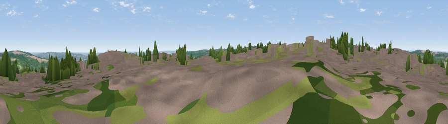

Viewpoint near No Place
#29722 in England · top 64% of its area beats it · near No PlaceWhere it is
The exact computed spot (NZ 20775 53175). Click the marker for map links.
The view, rendered

A 360° render of this exact spot computed from the terrain model, tree cover and land cover — summer colours, afternoon light, calibrated against photographs of famous viewpoints. Real trees, hedges and buildings will differ in detail.
The panorama
Grey silhouette: terrain skyline in each direction (720 bearings, Earth curvature and refraction included). Dashed green: skyline with trees (+15 m) and buildings (+8 m) as obstacles. Blue strip: how far the ground is visible on each bearing.
Where the view opens
Wedge length = distance to the farthest visible ground on that bearing (vegetation-aware). Rings at 10, 25 and 50 km.
What fills the view
36% grassland · 31% woodland · 20% built-up · 11% cropland
Angular shares of the visible panorama (visual magnitude), not map area. Landscape diversity 0.58 (0–1 Shannon).
Key numbers
More beautiful places nearby
The staircase of upgrades: each row has a higher view potential than everything closer. Driving times are estimates from straight-line distance, calibrated against real road routing — check an actual route before setting out.
| Place | Direction | Drive | Score |
|---|---|---|---|
| Viewpoint near Beamish | E · 2 km | ~5 min | 47.2 |
| Viewpoint near Flint Hill | WNW · 4 km | ~10 min | 68.5 |
| Blackmoor Hill | NNW · 5 km | ~11 min | 75.3 |
| Viewpoint near Sunniside | NNE · 5 km | ~11 min | 77.6 |
| Pontop Pike | W · 6 km | ~12 min | 77.8 |
| Viewpoint near Rothbury | NNW · 48 km | ~69 min | 81.1 |
| Dove Crag | NNW · 48 km | ~69 min | 82.3 |
| Viewpoint near Lazenby | SE · 50 km | ~71 min | 86.4 |
54.87292, -1.67779 · source: screening · position refined by local search. Computed location — check access rights before visiting.